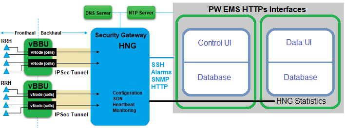

Configure System Settings for Devices
Use this chapter to configure the system settings necessary for the HetNet Gateway (HNG) to communicate with the PW EMS, configure and manage system settings for vBBU devices, and create services for vNodes and their associated cells.
The PW EMS uses the HNG as a controller for vBBU device(s). The HNG must be configured to communicate with the PW EMS and the vBBU must be pre-provisioned to connect with both the PW EMS and the HNG in order for the vBBU and HNG to appear in the PW EMS Web GUI. A vBBU has multiple vNode device instances that provide base-band compute resources to host multiple 2G and 4G service deployments by automatically scaling the processes, memory, and connection resources. Each vNode instance on the vBBU hosts these services through 2G and 4G cells that have various access devices such as Remote Radio Heads (RRHs). 2G, 4G, and SON profiles that contain a logical grouping of related configuration can be applied to one or more vBBUs and their respective vNode cells in order to create services later.
The following diagram shows the connectivity between access devices, vNodes, HNG, and the PW EMS system:
